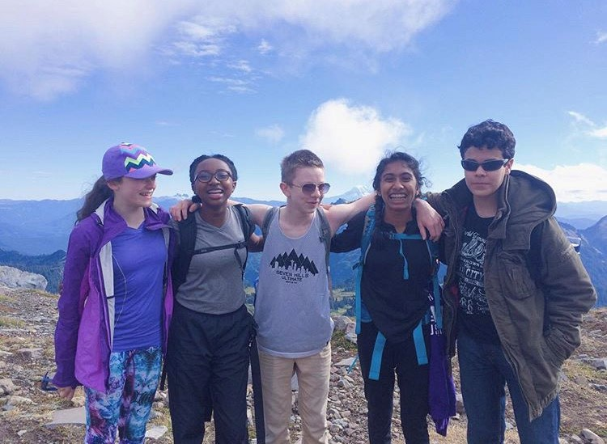
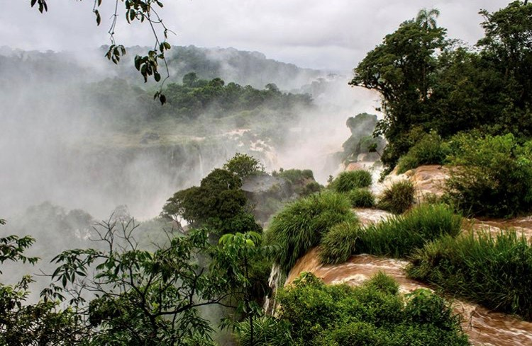

This page tells you stories of adventures at Mount Rainier and at Iguazu Falls!
My freshman year of high school I went on the fall outdoor club overnight retreat. It was the first time I had ever done any sort of backpacking or camping and it was completely out of my comfort zone. I had barely even hiked so to 7,000ft+ elevation on Mt. Rainer, was something I could have never imagined. I’m so glad I went, though, I made amazing memories with a group of people I would have never otherwise imagined myself hanging out with. We are now bonded over that experience and from time to time we share a laugh over the moments we shared that day.
On my EBC trip freshman year, I went to Argentina. For two of the nights we were there, we went to Iguazu Falls. While it was wet, and muddy, and a little cold it was breathing to see the heaps of water crashing and flowing over the edge. The vastness of the wildlife and vegetation was something I could only experience there. Iguazu Falls was one of the many highlights on the trip but it will forever stick out to me as it was one of the only times we saw the beauty of the natural world in Argentina.
